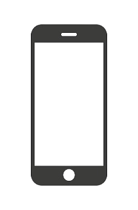
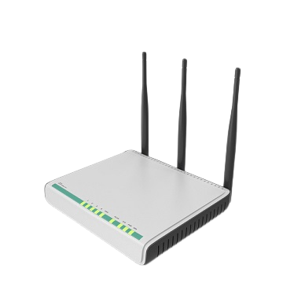
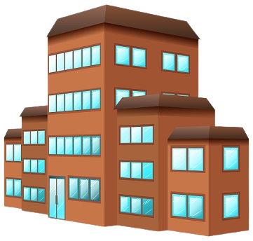

Quando você seleciona uma foto em seu celular para enviar, o sistema operacional a converte em uma sequência de zeros e uns, que é o código binário.
A foto é então dividida em pacotes menores, geralmente seguindo o protocolo de comunicação, e cada pacote recebe um cabeçalho que contém informações sobre o destino, a origem e a ordem do pacote. Seu celular utiliza um transmissor de rádio para enviar os pacotes por meio de ondas eletromagnéticas, geralmente usando tecnologias como Wi-Fi, 3G, 4G ou 5G.
Essas ondas são emitidas a partir do celular e viajam pelo ar em direção ao roteador Wi-Fi ou à estação base de celular mais próxima.

O roteador recebe as ondas eletromagnéticas e as converte em sinais elétricos ou feixes de luz, dependendo do tipo de conexão que está sendo usada (por exemplo, Wi-Fi ou fibra óptica). Os sinais elétricos ou feixes de luz são então transmitidos ao provedor de internet por meio da infraestrutura de comunicação, como cabos ou fibras ópticas.

Os pacotes são encaminhados pelo provedor de internet por uma vasta rede de comunicação, que inclui cabos terrestres e, em muitos casos, cabos submarinos em longas distâncias para conexões internacionais. Roteadores e switches ao longo da rede determinam o caminho mais eficiente para os pacotes chegarem ao destino.
Finalmente, os pacotes chegam ao banco de dados do destinatário, onde são reagrupados e a foto é reconstruída a partir dos pacotes.O banco de dados armazena a foto para acesso futuro ou a exibe, dependendo da finalidade do envio.